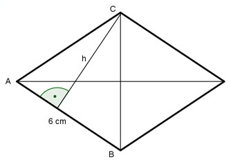

Flächenberechnungen Aufgabe 79 Wie groß ist die Höhe h einer Raute, wenn ihre Fläche 16 cm² beträgt und ihre Seiten 6 cm?  Fläche der Raute = 2 * Fläche des Dreiecks ABC 6 cm * h 16 cm² = 2 * ----------- 2 16 = 6 * h |:6 h = 2,7 cm